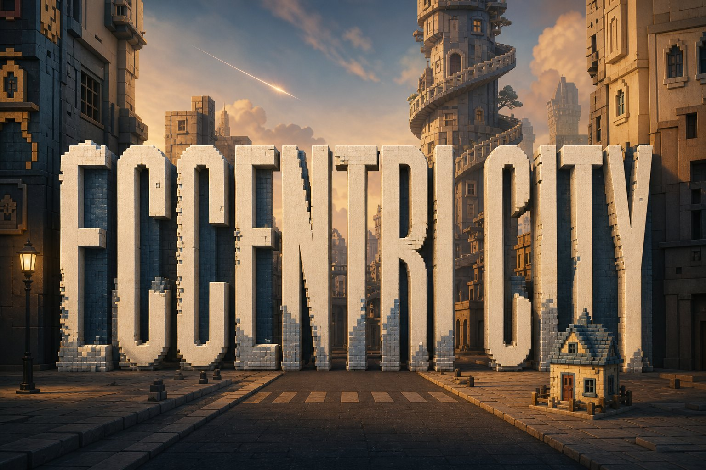
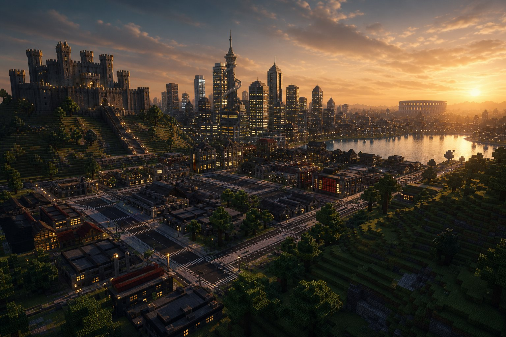

Spelunk
Drop into huge, truly 3D caves. Collect gems, blast open new rooms, and keep going where the street grid never reaches.

Footage
Short captures from inside the world. More coming — a longer cinematic pass later.

Truly infinite
The grid does not end. Castles beside lakes, arenas, graves, and gardens keep tiling outward — a new seed, another city, no edge of the map.
Places
Named places from a seeded city. Most of what you see can be blasted apart.
In the loop
This is not a build game. The city is mostly destroyable — the toys are exploration, creatures, and strange things you find under and inside the world.
Drop into huge, truly 3D caves. Collect gems, blast open new rooms, and keep going where the street grid never reaches.
Visit — or take part in — the forever war between monster factions. The city does not stay polite for long.
Create 3D fractal masterpieces and walk around inside them. Architecture that is also mathematics.
Scattered through the city: cabinets, odd machines, and side diversions waiting to be discovered.
Windows
Unzip and run. First launch fetches the engine once, imports assets, then you are in the city. Later launches work offline.
Hosted on GitHub Releases — always the latest portable package.